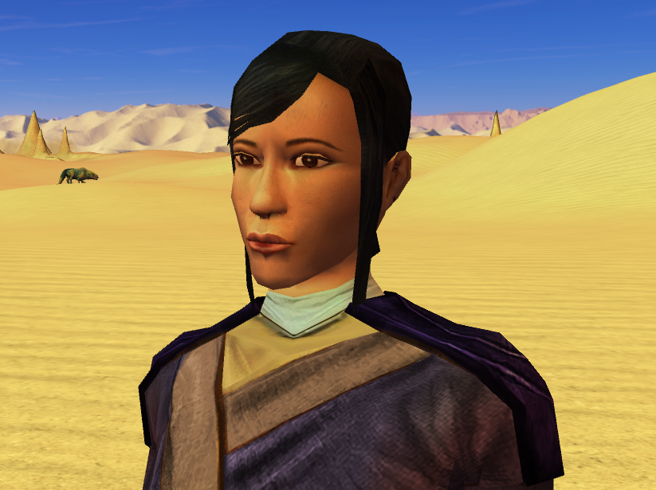
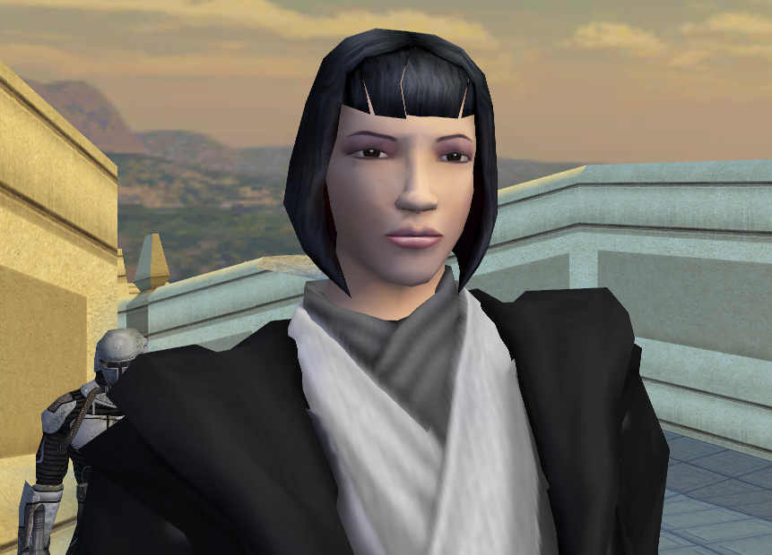

Leilukin's Star Wars: Knights of the Old Republic Universes
Here is a compilation of my universes and headcanons for Star Wars: Knights of the Old Republic Series.
My KotOR Timeline
This is my timeline for the events of the KotOR series, including the age of the major characters.
View Leilukin's KotOR Timeline hereMain Universe
My main KotOR universe.
Revan
Profile:
- Name: Jiaxuan Cheng 程嘉萱
- Class: Scout + Jedi Sentinel
- Pronouns: She/Her or They/Them
- Gender: Non-binary woman
- Species: Human
- Orientation: Lesbian
- Romance: Juhani and Bastila (polyamorous triad)
Jedi Exile
Profile:
- Name: Yunhua Yang 杨韵华
- Class: Jedi Sentinel + Jedi Weapon Master
- Pronouns: She/Her or They/Them
- Gender: Non-binary woman
- Species: Human
- Orientation: Lesbian
- Romance: Visas Marr